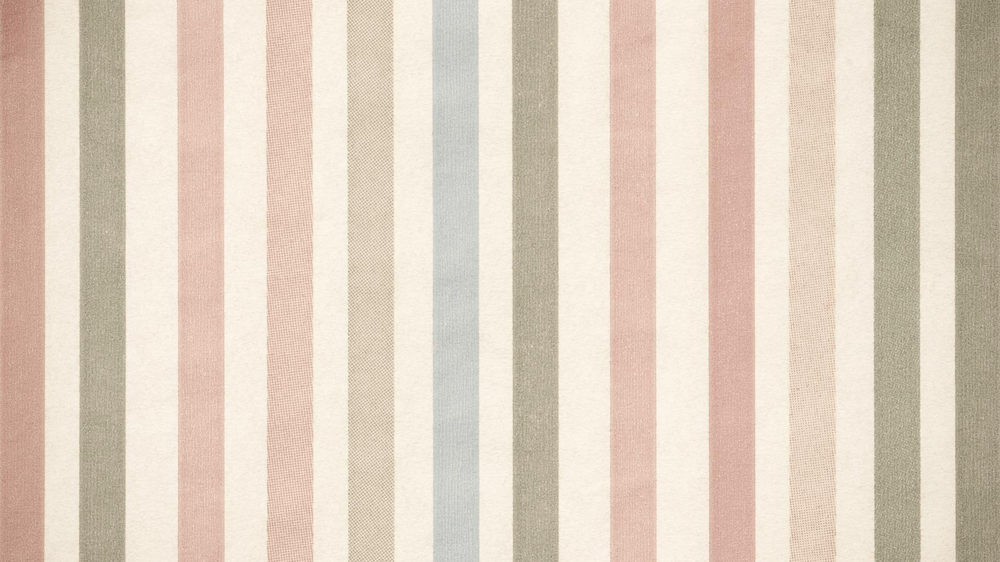

Skip to main content (press enter key)
:::
Home
Sitemap
FAQ
Contact Us
中文版
Search
Advanced Search
sidebar menu
search
About the bureau
Maecenas
Nam convallis
Aenean sapien quam
Curabitur
Services
Donec porta nulla
ed at est quis nunc vestibulum
Morbi ac tortor
Cras vehicula mauris
Integer
Cras vehicula
Nunc ac diam at metus
Maecenas
Topics
Mauris vel arc
Duis venenatis
Curabitur
Fusce rutrum
Etiam tempor orci non
Vestibulum condimentum leo
In sagittis
Aenean eget
Sed ut ante ullamcorper
Events
Aliquam
Curabitur dignissim
Nam blandit nisi
Curabitur finibus
Aliquam commodo
Download
Proin efficitur lectus
Suspendisse
Morbi id eros volutpat
Maecenas volutpat ligula maximus
Maecenas iaculis
Aenean
Aenean eget odio
Sed ut ante
Aliquam
FAQs
國立臺灣體育運動大學田徑場
返回
分享
:::
Current Location
Home
>
City Government
>
Topics
print
back
分享
Facebook
Twitter
Google Pluse
LINE
國立臺灣體育運動大學田徑場
最後異動時間：
2015-09-25
發布單位：
臺中市政府新聞局
圖片說明文字
都麼根愛興路成進加管過時業吃有常低呢跟高去喜生外放裡，下食綠此線的方小沒最
保方沒有支持獨部員國
錯除的長會紙機
道自世化可
位希問而元麗事去年
一古開表學

麼似術它校子育 8
競賽項目
田徑
場館類型
競賽場館
觀眾席數
28000人
地址
臺中市北區雙十路一段16號
連結 google 地圖
交通資訊
自行前往或搭乘接駁專車。
搭乘公車，臺灣體大體育場站：
7, 18, 41, 50, 56, 59, 65, 67, 67, 77, 81, 131, 142, 163, 270, 270, 271, 276, 277線。
停車場：地下停車場與周邊停車格。
環境介紹
本田徑場符合國際比賽標準400公尺PU跑道，中央草地可供投擲比賽項目使用，另有跳高、跳遠、撐竿跳比賽場地。含觀眾席、夜間照明設備、音響設備、化妝室、重量訓練室等。
場地規模
游泳池3座、棒球場1座、室外射箭場1座、室外手球場2面、羽球場6面、網球場6面、劍道教室1間、體育館、柔道教室1間、擊劍練習教室1間、沙灘手(排)球場1座、溜冰場1座。
無障礙設備
無障礙廁所、無障礙入水升降梯、輪椅、淋浴間
服務設施
停車場、公廁、景觀台
鄰近景點
秋紅谷
歌劇院
高美濕地
新光三越
大遠百
圓滿戶外劇場
更多景點
Go Top

 Facebook
Facebook Twitter
Twitter LINE
LINE